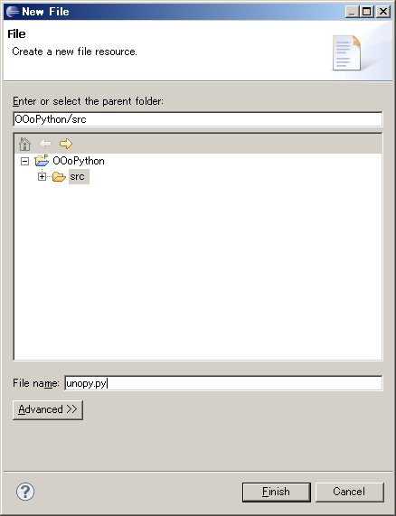

Macro格納場所
IDE環境構築
上記stepにてEclipesにてPython開発環境は整う。しかし、Macroの実行はOOoの「ツール」=>「マクロの管理」=>「Python」からしか実行出来ない。
次にEclipseからOOoの各Applicationを起動させる方法を記す。
Boot環境構築
次に下記工程をAutomation化させる方法を記す。
「eclipseにてMacro記述」=>「eclipseからOOo Aplication起動」=>「Macro実行」
Automation化
eclipseからOOo Macroを正確に実行するにはPlugInの作成等の特殊工程が必要である。しかしながら、
Step1 ： Automationにて「 Python文法Check / Debug 」&「 Macroの実行 」にてMacroの概略を作成。
Step2 ： OOoからPython Macroを実行して、Debug Checkを行う。
この方法がPython Macro作成手順の1例になると思います。
Other Site
Macro格納場所
Pythonのマクロは下記Folderに格納します。
[ マイマクロ ]
<< WindowsXP / OpenOffice.org >>
C:\Documents and Settings\user名\Application Data\OpenOffice.org\3\user\Scripts\python\
<< Windows7 / LibreOffice >>
C:\Users\User名\AppData\Roaming\LibreOffice\
IDE環境作成
1)Openoffice.org付属の「python.exe」と「uno.py」があるFolderを調べる。 [ 通常Installならば下記にある ] python.exe : C:\Program Files\OpenOffice.org 3\Basis\program\python-core-2.6.1\bin uno.py : C:\Program Files\OpenOffice.org 3\Basis\program 2)WindowsのPathに追加 「スタート」=>「コントロールパネル」=>「システム」=>「詳細設定」=>「環境変数」 PATH ： C:\Program Files\OpenOffice.org 3\Basis\program\python-core-2.6.1\bin;C:\Program Files\OpenOffice.org 3\Basis\program
1)下記Siteより「Eclipse Classic 3.6.0」をDownload URL : http://www.eclipse.org/downloads/ file name : eclipse-SDK-3.6-win32.zip 2)Unzip
コマンドプロンプトにて以下のコマンドを実施 c:\python >> import os >> os.environ['URE_BOOTSTRAP'] >> os.environ['PATH'] >> os.environ['UNO_PATH'] >> <= CTL + Z + Retun(Python終了) c:\
1)eclipse起動 workspace : C:\Documents and Settings\user名\Application Data\OpenOffice.org\3\user\Scripts\python 2)PyDev Install help => Install new Softeawe work with欄 URL ： http://update-production-pydev.s3.amazonaws.com/pydev/updates/site.xml name ： Pydev 「Select All」=>「Next」=>「I accept ・・・・」にCheck「Finish」=>「restart」
Interpreter & 外部環境 設定 Window => Preferences => Pydev => Interpreter => Python Python Interpreter ： C:\Documents and Settings\user名\Application Data\OpenOffice.org\3\user\Scripts\python Environment TAB PATH => C:\Program Files\OpenOffice.org 3\URE\bin;C:\Program Files\OpenOffice.org 3\Basis\program UNO_PATH => C:\Program Files\OpenOffice.org 3\Basis\program URE_BOOTSTRAP => vnd.sun.star.pathname:C:\Program Files\OpenOffice.org 3/program/fundamental.ini
右上の「JAVA」の左横にある□をClickしてPydevに切り替える。
1)Pydev Project作成 file => new => PyDev Project Project Name : OOoPython 2)Python Folder作成 OOoPython - src 下にpython foldef作成 3)pythonpath Folder作成 paython下にpythonpath folder作成
以下のFolderを調べておく uno.py : C:\Program Files\OpenOffice.org 3\Basis\program unohelper.py : C:\Program Files\OpenOffice.org 3\Basis\program
OOoPythonを右Click properties => PyDev-PYTHONPATH => External Libraries にuno.py onohelper.pyのPAthを追加
Projectの Properties - PyDev - PYTHONPATH の Source Folders に src 以下が含まれていることを確認

OOoPython - src下にunopy.py fileを作成
#
#! # unopy.py
# -*- coding: utf_8 -*-
import uno
import unohelper
from com.sun.star.script.provider import XScriptContext
class ScriptContext(unohelper.Base, XScriptContext):
def __init__(self, ctx):
self.ctx = ctx
def getComponentContext(self):
return self.ctx
def getDesktop(self):
return self.ctx.getServiceManager().createInstanceWithContext("com.sun.star.frame.Desktop", self.ctx)
def getDocument(self):
return self.getDesktop().getCurrentComponent()
def connect():
ctx = None
try:
localctx = uno.getComponentContext()
resolver = localctx.getServiceManager().createInstanceWithContext(
"com.sun.star.bridge.UnoUrlResolver", localctx)
ctx = resolver.resolve(
"uno:socket,host=localhost,port=2002;urp;StarOffice.ComponentContext")
if ctx:
return ScriptContext(ctx)
except:
pass
return None
Boot環境構築
notePadにてOOoListen.batを作成 cd \ "C:\Program Files\OpenOffice.org 3\program\soffice.exe" "-accept=socket,host=localhost,port=2002;urp;StarOffice.ServiceManager"
# 下記CodeをPython以下に作成
#
#
import uno
localContext = uno.getComponentContext()
resolver = localContext.ServiceManager.createInstanceWithContext("com.sun.star.bridge.UnoUrlResolver", localContext )
ctx = resolver.resolve( "uno:socket,host=localhost,port=2002;urp;StarOffice.ComponentContext" )
smgr = ctx.ServiceManager
desktop = smgr.createInstanceWithContext( "com.sun.star.frame.Desktop",ctx)
NewDoc = desktop.loadComponentFromURL( "private:factory/scalc","_blank", 0, () )
#
#
1)OOoListen.batにてOOoをListen Modeで起動
2)test.py実行
Calcが起動すればOK
Automation化
#! # unopy.py
# -*- coding: utf_8 -*-
import uno
import unohelper
from com.sun.star.script.provider import XScriptContext
class ScriptContext(unohelper.Base, XScriptContext):
def __init__(self, ctx):
self.ctx = ctx
def getComponentContext(self):
return self.ctx
def getDesktop(self):
return self.ctx.getServiceManager().createInstanceWithContext(
"com.sun.star.frame.Desktop", self.ctx)
def getDocument(self):
return self.getDesktop().getCurrentComponent()
def connect():
ctx = None
try:
localctx = uno.getComponentContext()
resolver = localctx.getServiceManager().createInstanceWithContext(
"com.sun.star.bridge.UnoUrlResolver", localctx)
ctx = resolver.resolve(
"uno:socket,host=localhost,port=2002;urp;StarOffice.ComponentContext")
if ctx:
return ScriptContext(ctx)
except:
pass
return None
def run_script(ctx, mod_name, func_name, location="user"):
script_url = "vnd.sun.star.script:%s$%s?language=Python&location=%s" % (mod_name, func_name, location)
msp = ctx.getValueByName("/singletons/com.sun.star.script.provider.theMasterScriptProviderFactory")
sp = msp.createScriptProvider("")
script = sp.getScript(script_url)
return script.invoke((), (), ())
以下のPython Macroの場合
#
#! # OriginalTest2.py
# -*- coding: utf_8 -*-
def hello(arg=''):
doc = XSCRIPTCONTEXT.getDocument()
doc.getText().setString("Hello!" if not arg else arg)
hello("Hello! (from automation)")
をeclipseからAutomationにて実行する場合は以下の様になる。
しかも、下記CodeはOOoから実行した場合は「if __name__ == '__main__':」の結果が「false」なので、
上記Codeと同じになる。
#
#! # test2.py
# -*- coding: utf_8 -*-
def hello(arg=''):
doc = XSCRIPTCONTEXT.getDocument()
doc.getText().setString("Hello!" if not arg else arg)
if __name__ == '__main__':
import uno
localContext = uno.getComponentContext()
resolver = localContext.ServiceManager.createInstanceWithContext("com.sun.star.bridge.UnoUrlResolver", localContext )
ctx = resolver.resolve( "uno:socket,host=localhost,port=2002;urp;StarOffice.ComponentContext" )
smgr = ctx.ServiceManager
desktop = smgr.createInstanceWithContext( "com.sun.star.frame.Desktop",ctx)
doc = desktop.loadComponentFromURL( "private:factory/swriter","_blank", 0, () )
import unopy
XSCRIPTCONTEXT = unopy.ScriptContext(ctx)
if 1:
hello("Hello! (from automation)")
else:
unopy.run_script(ctx, "test2.py", "hello", "user名")
####### OOoから実行するMacro Code #########
#
#
from com.sun.star.awt import Rectangle~
def show_message(desktop, message):
"""shows message."""
frame = desktop.getCurrentFrame()
window = frame.getContainerWindow()
toolkit = window.getToolkit()
msgbox = toolkit.createMessageBox(
window, Rectangle(), 'messbox', 1, '', message)
return msgbox.execute()
def get_active_cell():
doc = XSCRIPTCONTEXT.getDocument()
selected = doc.getCurrentSelection()
try:
if selected.supportsService('com.sun.star.sheet.SheetCellRange'):
addr = selected.getRangeAddress()
txt = 'Column: %s\nRow: %s' % (addr.EndColumn, addr.EndRow)
show_message(XSCRIPTCONTEXT.getDesktop(), txt)
except:
pass
#
#
####### ecipseからAutomationにて実行するCode #######
#
#
import uno
from com.sun.star.awt import Rectangle
def show_message(desktop, message):
"""shows message."""
frame = desktop.getCurrentFrame()
window = frame.getContainerWindow()
toolkit = window.getToolkit()
msgbox = toolkit.createMessageBox(
window, Rectangle(), 'messbox', 1, '', message)
return msgbox.execute()
def get_active_cell():
doc = XSCRIPTCONTEXT.getDocument()
selected = doc.getCurrentSelection()
try:
if selected.supportsService('com.sun.star.sheet.SheetCellRange'):
addr = selected.getRangeAddress()
txt = 'Column: %s\nRow: %s' % (addr.EndColumn, addr.EndRow)
show_message(XSCRIPTCONTEXT.getDesktop(), txt)
except:
pass
if __name__ == '__main__':
# import uno
localContext = uno.getComponentContext()
resolver = localContext.ServiceManager.createInstanceWithContext("com.sun.star.bridge.UnoUrlResolver", localContext )
ctx = resolver.resolve( "uno:socket,host=localhost,port=2002;urp;StarOffice.ComponentContext" )
smgr = ctx.ServiceManager
desktop = smgr.createInstanceWithContext( "com.sun.star.frame.Desktop",ctx)
doc = desktop.loadComponentFromURL( "private:factory/scalc","_blank", 0, () )
import unopy
XSCRIPTCONTEXT = unopy.ScriptContext(ctx)
if 1:
get_active_cell()
else:
unopy.run_script(ctx, "test3.py","" , "user名")